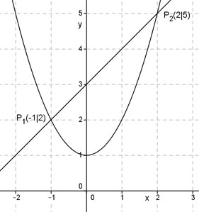

Aufgabe 16 Liegt der Punkt (-1|-5,5) auf dem Graphen der Funktion y = x² - 4,5? Punkt (-1|-5,5) bedeutet, x = -1 und y = -5,5. In y = x² - 4,5 eingesetzt: -5,5 = 1 – 4,5 -5,5 = -3,5 Dies ist ein Widerspruch, somit liegt der Punkt nicht auf dem Graphen. 